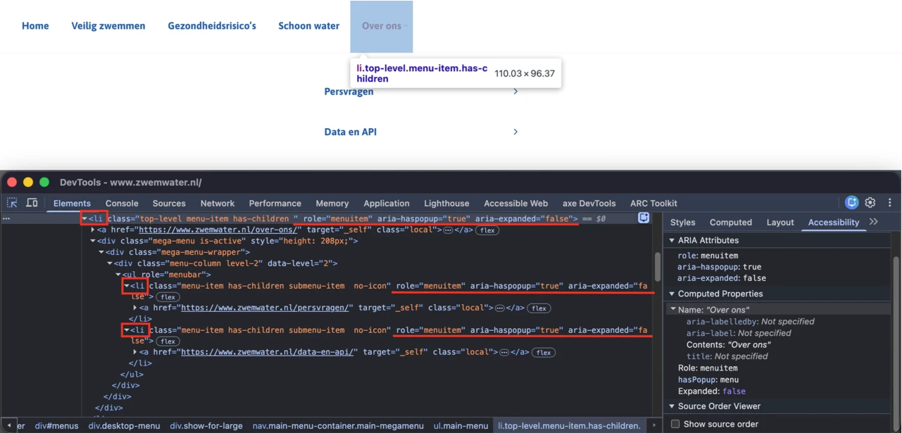
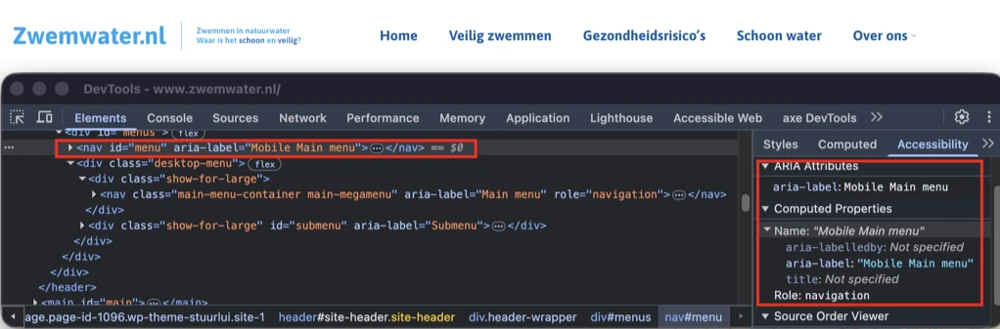
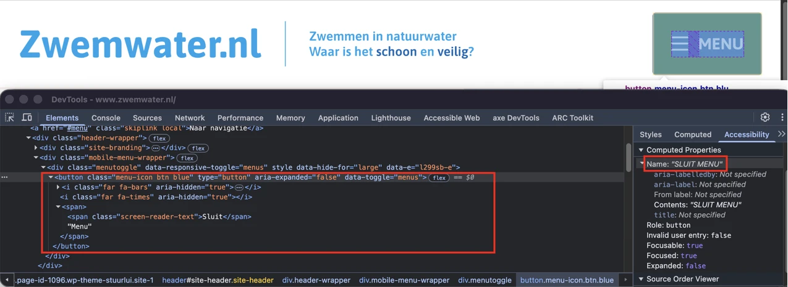
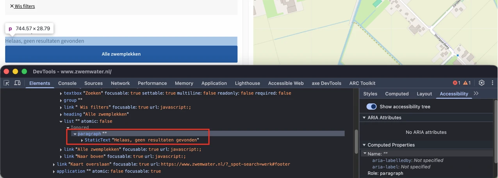
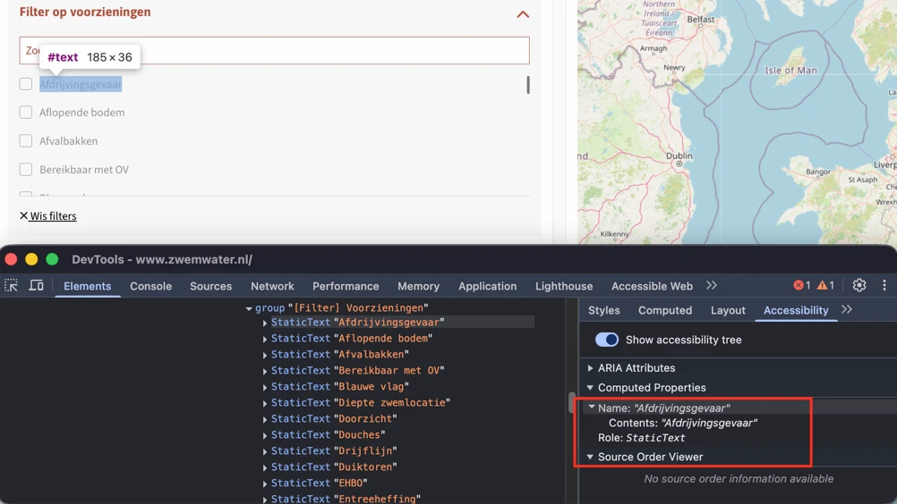
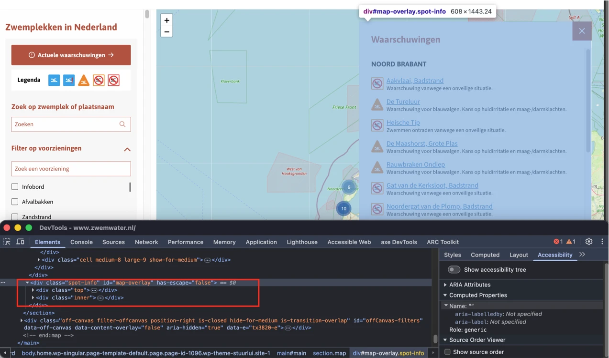
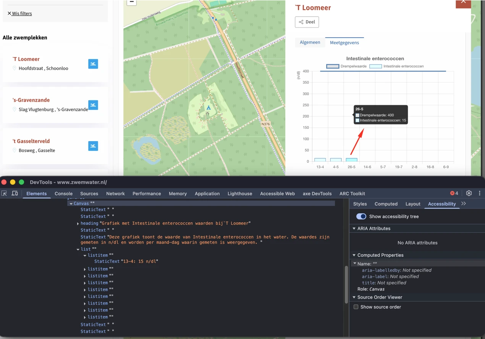
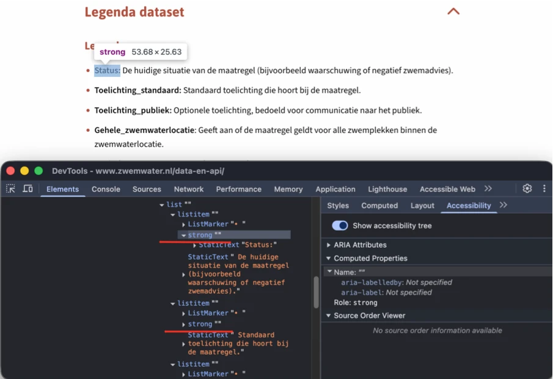

Audit digitale toegankelijkheid van website zwemwater.nl
Samenvatting
Wij hebben de website zwemwater.nl onderzocht tussen 29 mei en 12 juni 2026. Op dit moment is een deel van de succescriteria als voldoende beoordeeld. In dit rapport lees je welke punten nog verbetering behoeven en hoe deze kunnen worden aangepakt.
#1 - Toetsenbordfocus komt buiten het dialoogvenster
Impact: GrootType: TechniekWCAG: 2.4.3EN: 9.2.4.3
Als een bezoeker de website voor het eerst bezoekt, verschijnt er een cookie-dialoogvenster. Op dit moment kan de toetsenbordfocus uit het geopende dialoogvenster ontsnappen en naar de onderliggende pagina-inhoud verplaatsen. Zolang het dialoogvenster open is, moet de toetsenbordfocus binnen het dialoogvenster blijven.
User story
Als bezoeker gebruik ik de website met een toetsenbord en een schermlezer. Als een dialoogvenster open is en ik op Tab druk, kom ik op de pagina erachter terecht. Ik verwacht dat de focus binnen het dialoogvenster blijft totdat ik het sluit.
Hoe te testen
Tab van boven naar beneden door de pagina en let op sprongen die niet overeenkomen met de visuele volgorde. Open elk dialoogvenster, elke uitklaplijst en elk dynamisch component en controleer of de focus op een logische plek belandt. Vermijd positieve tabindex-waarden volledig.
Oplossing
Dit kan met JavaScript worden bereikt door de focus binnen het dialoogvenster vast te houden totdat het wordt gesloten (door op een sluitknop te klikken of op Escape te drukken). Een alternatief is dat het dialoogvenster automatisch sluit wanneer de focus het probeert te verlaten.
#2 - Toetsenbordfocus wordt afgedekt door het dialoogvenster
Als een bezoeker de website voor het eerst bezoekt, verschijnt er een cookie-dialoogvenster. Dit dialoogvenster dekt een deel van de pagina af. Interactieve elementen onder dit dialoogvenster kunnen nog steeds toetsenbordfocus krijgen, ook al zijn ze visueel afgedekt.
User story
Als bezoeker gebruik ik de website met een toetsenbord. Als ik op Tab druk om door de pagina te navigeren, beland ik soms op een element dat ik niet kan zien. Ik verwacht dat alleen zichtbare elementen toetsenbordfocus krijgen.
Hoe te testen
Tab door de pagina terwijl sticky headers, footers, cookiebanners en chatwidgets zichtbaar zijn. Bij elke stap moet ten minste een deel van het gefocuste element met zijn focusindicator zichtbaar zijn, nooit volledig verborgen achter andere inhoud.
Oplossing
Alleen zichtbare elementen mogen toetsenbordfocus kunnen krijgen.
Het cookie-dialoogvenster bevat de tekst "Deze website maakt gebruik van cookies" die eruitziet als een kop. Deze tekst is opgemaakt met een h2-element, maar krijgt ook role="status", waardoor de kop-semantiek wordt overschreven. Een schermlezer kondigt de tekst daardoor niet als kop aan. Een status-rol is bedoeld voor live-meldingen van dynamische wijzigingen, niet voor een statische titel.
Als tekst functioneert als kop maar de juiste opmaak mist, verliest die zijn semantische betekenis en wordt die ontoegankelijk voor bezoekers die afhankelijk zijn van hulpsoftware zoals schermlezers. Koppen zijn essentieel om de inhoud te navigeren en de structuur ervan te begrijpen.
User story
Als bezoeker lees ik de website met een schermlezer. Als ik door de pagina of een dialoogvenster navigeer op koppen, verwacht ik dat alle zichtbare koppen als kop worden herkend en aangekondigd. Zo begrijp ik de structuur van de inhoud en navigeer ik snel tussen secties.
Hoe te testen
Open het cookie-dialoogvenster en navigeer erdoorheen met de koppennavigatie of koppenlijst van een schermlezer. Controleer of de tekst "Deze website maakt gebruik van cookies" als kop wordt aangekondigd en in de koppenlijst staat. Inspecteer de toegankelijkheidsinformatie en bevestig dat het element kop-semantiek heeft die niet door een andere rol wordt overschreven.
Oplossing
Zorg dat "Deze website maakt gebruik van cookies" als kop wordt blootgesteld aan hulpsoftware. Verwijder role="status" van het kop-element, want status-rollen zijn bedoeld voor dynamische meldingen en overschrijven de kop-semantiek.
#4 - Niet alle zichtbare tekst van het logo staat in het tekstalternatief
Het logo boven aan de website toont de volledige tekst "Zwemwater.nl Zwemmen in natuurwater. Waar is het schoon en veilig", maar het tekstalternatief (de alt-tekst) is "Logo:Zwemwater.nl Zwemmen in natuurwater. Waar is het schoon". De alt-tekst moet alle zichtbare tekst in het logo bevatten, inclusief de tekst "en veilig", zodat bezoekers die de afbeelding niet kunnen zien dezelfde informatie krijgen.
User story
Als bezoeker lees ik de website met een schermlezer. Als ik naar het logo navigeer, hoor ik niet de volledige naam van de organisatie. Ik verwacht dat de tekst die ik hoor overeenkomt met wat visueel in het logo wordt getoond.
Hoe te testen
Inspecteer elke afbeelding, elk icoon en elke SVG in DevTools. Informatieve exemplaren hebben een alt (of toegankelijke naam) nodig die de betekenis overbrengt; decoratieve gebruiken alt="" of aria-hidden="true". Controleer met een schermlezer dat er geen ruis (bestandsnaam, "afbeelding") wordt aangekondigd.
Oplossing
Werk het tekstalternatief bij zodat het de volledige zichtbare tekst van het logo bevat. Omdat dit logo een link is, kan de tekst "Logo" worden weggelaten.
#5 - Uitklapbaar menu-item en submenu zijn met een onjuiste ARIA-structuur gebouwd
Impact: GrootType: TechniekWCAG: 4.1.2EN: 9.4.1.2

In het hoofdnavigatiemenu bevat het menu-item "Over ons" een uitklapbaar submenu. Zowel het uitklapbare menu-item als het submenu dat het opent, zijn onjuist gebouwd.
De role="menuitem" en de attributen aria-haspopup en aria-expanded staan op het li-element, terwijl het werkelijke interactieve element het geneste a-element is. Het li-element is niet focusbaar, en het focusbare a-element heeft geen role, aria-haspopup of aria-expanded.
Het submenu is opgemaakt met role="menubar", maar een genest pop-upsubmenu hoort role="menu" te gebruiken, niet "menubar" (die is gereserveerd voor een permanent zichtbare balk op het hoogste niveau). De submenu-items "Persvragen" en "Data en API" hebben ook role="menuitem" en de attributen aria-haspopup en aria-expanded op een niet-focusbaar li-element. Bovendien worden deze attributen (aria-haspopup en aria-expanded) onjuist gebruikt, omdat deze submenu-items in werkelijkheid niets uitklappen.
Hierdoor stelt hulpsoftware mogelijk niet de juiste rol en uitgeklapt/ingeklapt-status bloot op de elementen die focus krijgen, en kondigt die mogelijk pop-ups en uitgeklapte statussen aan die niet bestaan. Schermlezergebruikers horen misschien de links "Over ons", "Persvragen" en "Data en API", maar worden mogelijk niet correct geïnformeerd welke items een submenu openen of of een submenu uit- of ingeklapt is.
User story
Als bezoeker gebruik ik een schermlezer. Als ik naar een menu-item navigeer dat een submenu opent, verwacht ik dat het gefocuste element duidelijk aankondigt dat het een submenu heeft en of dat uit- of ingeklapt is, en dat items zonder submenu niet beweren er een te hebben. Zonder accurate informatie begrijp ik niet hoe het menu zich gedraagt of wat er gebeurt als ik het activeer.
Hoe te testen
Navigeer door het hoofdmenu met een toetsenbord en schermlezer. Verplaats de focus naar "Over ons" en daarna naar de submenu-items "Persvragen" en "Data en API". Controleer of elk gefocust element met de juiste rol wordt aangekondigd en, waar van toepassing, met een accurate uit-/ingeklapt-status. Inspecteer de toegankelijkheidsboom en bevestig dat aria-haspopup en aria-expanded op de focusbare interactieve elementen staan (niet alleen op niet-focusbare li-containers), dat aria-haspopup en aria-expanded alleen aanwezig zijn op items die echt een submenu aansturen, en dat de submenu-container een passende rol gebruikt.
Oplossing
Plaats de interactieve rol en statussen op het focusbare element dat het submenu aanstuurt. Geef bijvoorbeeld aria-haspopup="true" en aria-expanded aan het a-element van "Over ons" en werk aria-expanded dynamisch bij wanneer het submenu opent of sluit. Houd de li-elementen als structurele containers (bijvoorbeeld met role="none"). Verander de submenu-container van role="menubar" naar role="menu". Verwijder aria-haspopup en aria-expanded van de submenu-items "Persvragen" en "Data en API", omdat ze geen verder submenu aansturen. Zorg dat het submenu een geldig en consistent navigatie-/menupatroon gebruikt: https://www.w3.org/WAI/ARIA/apg/patterns/menubar/.
De huidige implementatie probeert het ARIA-menu/menubar-patroon te gebruiken, maar de vereiste rollen, statussen en interacties zijn niet correct geïmplementeerd. Het beste is om een standaard navigatiepatroon met native HTML-elementen te gebruiken. Navigatie-items die naar een andere pagina gaan, horen links te zijn (a-elementen). Items die een submenu openen of sluiten, horen knoppen te zijn (button-elementen). Als "Over ons" zowel naar een pagina navigeert als toegang geeft tot een submenu, gebruik dan gescheiden bedieningselementen: een link voor navigatie en een knop voor het uit- en inklappen van het submenu. Het submenu hoort een geneste lijst van links te zijn. Submenu-items zoals "Persvragen" en "Data en API" blijven eenvoudige links, omdat ze geen verder submenu openen.
Het onderstaande voorbeeld is illustratief. Wanneer het submenu opent, verwijder het hidden-attribuut en zet de knop op aria-expanded="true". Wanneer het sluit, voeg hidden weer toe en zet aria-expanded="false".
<liclass="top-level menu-item has-children"> <!-- De paginalink blijft een echte link --> <ahref="/over-ons/">Over ons</a>
<!-- Een echte knop schakelt het submenu --> <button type="button" aria-expanded="false" aria-controls="submenu-over-ons" aria-label="Submenu Over ons"> <!-- Decoratief icoon: verborgen voor schermlezers --> <svgwidth="16"height="16"viewBox="0 0 24 24"aria-hidden="true"focusable="false"> <pathd="M6 9l6 6 6-6"fill="none"stroke="currentColor"stroke-width="2"/> </svg> </button>
<!-- Submenu is verborgen tot het uitklapt --> <ulid="submenu-over-ons"hidden> <li><ahref="/persvragen/">Persvragen</a></li> <li><ahref="/data-en-api/">Data en API</a></li> </ul> </li>
#6 - Submenu is niet toegankelijk met het toetsenbord
Impact: GrootType: TechniekWCAG: 2.1.1EN: 9.2.1.1
Het hoofdmenu in de header van deze website bevat een submenu dat met "Over ons" wordt geopend en niet met het toetsenbord bedienbaar is. Submenu's moeten volledig met het toetsenbord toegankelijk zijn. Bezoekers moeten items in submenu's kunnen openen, doorlopen en selecteren met alleen het toetsenbord. Daarnaast moet de informatie in deze submenu's toegankelijk zijn voor alle bezoekers, ongeacht of ze een muis of toetsenbord gebruiken. Tot slot horen de pagina's waarnaar de submenu-items linken alle informatie te bevatten die in de submenu's zelf staat. Informatie mag niet uitsluitend binnen het submenu beschikbaar zijn.
User story
Als bezoeker gebruik ik de website met een toetsenbord. Als ik door het menu navigeer, kan ik de submenu's niet met mijn toetsenbord openen. Ik verwacht dat ik alle submenu-items kan bereiken en gebruiken zonder muis.
Hoe te testen
Koppel de muis los en loop met Tab, Enter, Spatie en pijltjestoetsen door de pagina. Elke link, knop, formulierveld en custom component moet bereikbaar en bedienbaar zijn. Let op onclick-handlers zonder toetsenbordequivalent en interacties die alleen met slepen werken.
Oplossing
Zorg dat alle submenu's volledig met het toetsenbord bedienbaar zijn. Bezoekers moeten submenu's kunnen openen met Enter of Spatie op het bovenliggende menu-item, erin kunnen navigeren met Tab of pijltjestoetsen, en ze kunnen sluiten met Escape. Alle informatie en links in de submenu's moeten bereikbaar zijn via toetsenbordnavigatie. Daarnaast horen de pagina's waarnaar de hoofdnavigatie-items linken dezelfde informatie te bevatten als de submenu's, zodat geen inhoud uitsluitend via het submenu beschikbaar is.
#7 - Leeg navigatielandmark wordt blootgesteld aan hulpsoftware
Impact: KleinType: TechniekWCAG: 1.3.1EN: 9.1.3.1

In de header staat een nav-element met de toegankelijke naam "Mobile Main menu". Op grote (desktop) viewports wordt de menu-inhoud verborgen met CSS (display: none), waardoor alle links en menu-items ontoegankelijk zijn voor schermlezergebruikers. Het nav-element zelf blijft echter blootgesteld aan hulpsoftware.
Hierdoor kondigen schermlezers een navigatielandmark met de naam "Mobile Main menu" aan, ook al bevat dit geen waarneembare of bedienbare inhoud. Zo ontstaat een leeg navigatiegebied en wordt een paginastructuur blootgesteld die niet overeenkomt met wat visueel wordt getoond.
Schermlezergebruikers die op landmarks navigeren, kunnen naar het gebied "Mobile Main menu" gaan en daar geen inhoud aantreffen, wat verwarrend is en de navigatie minder efficiënt maakt.
User story
Als bezoeker gebruik ik een schermlezer en navigeer ik vaak op landmarks. Als ik naar een navigatiegebied ga, verwacht ik daar bruikbare navigatie-inhoud. Een als "Mobile Main menu" gelabeld navigatiegebied dat leeg is, doet mij denken dat de inhoud niet is geladen of dat ik iets heb gemist, en maakt de paginastructuur lastiger te begrijpen.
Hoe te testen
Inspecteer de pagina op een desktopbrede viewport met de developer tools van de browser en een schermlezer. Controleer of er een navigatielandmark met de naam "Mobile Main menu" aanwezig is. Controleer of dat landmark blootgestelde, bedienbare inhoud bevat; als de inhoudscontainer display: none is terwijl de nav-wrapper blootgesteld blijft, is het landmark leeg. Bevestig dat verborgen mobiele navigatiegebieden niet aan hulpsoftware worden blootgesteld wanneer hun inhoud niet beschikbaar is.
Oplossing
Zorg dat het navigatielandmark alleen wordt blootgesteld wanneer het daadwerkelijk bruikbare inhoud bevat. Als de inhoud van het mobiele menu op desktopbreedte verborgen is, verberg dan ook het omhullende nav-element voor hulpsoftware, bijvoorbeeld door display: none toe te passen op het nav-element zelf in plaats van alleen op de binnenste container. Zo wordt het lege landmark uit de toegankelijkheidsboom verwijderd en komt de blootgestelde structuur overeen met de inhoud die werkelijk aanwezig is.
#8 - Custom toetsenbordfocusindicator heeft onvoldoende kleurcontrast
Onder aan de pagina's van de website staat een sticky knop die een widget voor cookie-instellingen opent. Deze knop heeft een custom toetsenbordfocus die eruitziet als een donkerblauwe (#1032CF) rand op een blauwe (#005EA5) achtergrond. De contrastverhouding tussen deze kleuren is 1,3:1, wat onder het vereiste minimum van 3,0:1 ligt. Custom toetsenbordfocusindicatoren moeten aan de contrasteisen voldoen, in tegenstelling tot de standaard browser-focusindicator. Omdat bezoekers custom focusindicatoren niet kunnen aanpassen, moeten ze een contrastverhouding van minimaal 3,0:1 met de achtergrond hebben.
User story
Als bezoeker met een visuele beperking gebruik ik de website met een toetsenbord. Als ik door de pagina navigeer, kan ik niet duidelijk zien welk element focus heeft. Ik verwacht dat de focusindicator duidelijk afsteekt tegen de achtergrond.
Hoe te testen
Meet het contrast van focusindicatoren, randen van invoervelden, statussen van selectievakjes en keuzerondjes en informatieve iconen tegen hun achtergrond met de Colour Contrast Analyser. De ondergrens is 3,0:1. Vergeet grafieksegmenten en onderstrepingen van links niet.
Oplossing
Verhoog het contrast van de custom focusindicator zodat die aan deze eis voldoet.
#9 - Zichtbare tekst op de afbeeldingen staat niet in het tekstalternatief
In de footer tonen de afbeeldingen onder "Download de zwemwater app" de volledige tekst "Download in de App Store" en "Ontdek het op Google Play". De tekstalternatieven (de alt-teksten) zijn echter "Download op de App Store" en "Download op Google Play". De alt-tekst moet alle zichtbare tekst bevatten, zodat bezoekers die de afbeelding niet kunnen zien dezelfde informatie krijgen.
Dit verschil voorkomt ook dat deze afbeeldingen (die tevens links zijn) met spraakbesturing kunnen worden geactiveerd. Als de zichtbare tekst afwijkt van de toegankelijke naam, werken spraakcommando's op basis van de zichtbare tekst niet.
User story
Als bezoeker lees ik de website met een schermlezer. Als ik naar de afbeelding met tekst navigeer, hoor ik niet de volledige tekst die op de afbeelding staat. Ik verwacht dat de tekst die ik hoor overeenkomt met wat visueel op de afbeelding staat. Ik gebruik de website ook met spraakinvoer. Als ik de zichtbare linktekst uitspreek, herkent de website mijn commando niet en gebeurt er niets. Ik verwacht dat de link opent als ik de zichtbare tekst uitspreek.
Hoe te testen
Inspecteer afbeeldingen die zichtbare tekst bevatten en controleer of hun tekstalternatieven of toegankelijke namen alle tekst bevatten die op de afbeelding staat. Vergelijk de zichtbare tekst met de toegankelijke naam die aan hulpsoftware wordt blootgesteld. Controleer ook of gelinkte afbeeldingen met spraakbesturingscommando's op basis van de zichtbare tekst kunnen worden geactiveerd.
Oplossing
Werk de tekstalternatieven bij zodat ze de volledige zichtbare tekst op de afbeeldingen bevatten. Bijvoorbeeld: "Download in de App Store" en "Ontdek het op Google Play". Zorg dat de toegankelijke naam van elke gelinkte afbeelding dezelfde tekst bevat als visueel wordt getoond.
#10 - Kop heeft niet de juiste opmaak
Impact: MediumType: ContentWCAG: 1.3.1EN: 9.1.3.1
In de footer is de tekst "Download de zwemwater app" niet opgemaakt als kop. Als tekst functioneert als kop maar de juiste opmaak mist, verliest die zijn semantische betekenis en wordt die ontoegankelijk voor bezoekers die afhankelijk zijn van hulpsoftware zoals schermlezers. Koppen zijn essentieel om de inhoud te navigeren en de structuur ervan te begrijpen.
User story
Als bezoeker lees ik de website met een schermlezer. Als ik een pagina op koppen navigeer, mis ik koppen die alleen visueel zijn opgemaakt. Ik verwacht dat alle zichtbare koppen door mijn schermlezer als kop worden herkend.
Hoe te testen
Loop met DevTools en een schermlezer door de pagina. Visuele koppen, lijsten, tabellen, fieldsets en actieve statussen moeten allemaal in de HTML bestaan, niet alleen als gestileerde tekst. Gebruik axe voor een snelle geautomatiseerde scan en controleer daarna of de structuur klopt als een schermlezer die lineair voorleest.
Oplossing
Zorg dat deze tekst wordt opgemaakt met de juiste kop-elementen (h1 tot en met h6) om de rol en hiërarchie in de inhoud weer te geven.
#11 - Naam van de knop beschrijft niet wat de knop doet
Impact: GrootType: TechniekWCAG: 2.4.6EN: 9.2.4.6

Als de pagina's van de website op een klein scherm worden bekeken, staat in de header de knop "Menu" die het navigatiemenu opent. Nadat de bezoeker het navigatiemenu opent en weer sluit, is de toegankelijke naam van deze knop "Sluit menu", wat de functie niet beschrijft. Dit maakt het voor blinde bezoekers en bezoekers die op schermlezers vertrouwen lastig om het doel van de knop te begrijpen. De toegankelijke naam moet de actie van de knop helder en bondig weergeven.
User story
Als bezoeker lees ik de website met een schermlezer. Als ik een knop tegenkom, hoor ik een naam die mij niet vertelt wat de knop doet. Ik verwacht dat elke knop een duidelijke naam heeft die de actie beschrijft.
Hoe te testen
Maak een lijst van alle koppen (gebruik HeadingsMap of de koppenlijst van een schermlezer) en alle formulierlabels. Elk moet duidelijk genoeg beschrijven wat erop volgt om een navigatiekeuze te kunnen maken. Vage koppen als "Sectie" of "Meer info" helpen niet; identieke labels voor verschillende velden ook niet.
Oplossing
Werk de toegankelijke naam bij zodat die de functie van de knop accuraat weergeeft (bijvoorbeeld "Open menu").
#12 - Onjuiste ARIA-rollen en -structuur in navigatiemenu
Als de website op een klein scherm wordt bekeken, opent de knop "Menu" in de header het navigatiemenu. Het navigatiemenu is echter gebouwd met ARIA-rollen die het doel en de structuur niet accuraat weergeven.
De navigatie wordt blootgesteld als een tree-widget met role="tree" en role="treeitem", terwijl die functioneert als een navigatiemenu van een website. Tree-widgets zijn bedoeld voor hiërarchische applicatiebediening en vereisen specifieke interactiepatronen die afwijken van standaard websitenavigatie.
Daarnaast worden interactieve rollen en statussen zoals role="treeitem", aria-haspopup en aria-expanded toegepast op niet-focusbare li-elementen in plaats van op de focusbare bedieningselementen waarmee bezoekers interageren. Hierdoor stelt hulpsoftware mogelijk niet de juiste rol, het doel of de status van menu-items bloot.
De submenustructuur die met "Over ons" wordt geopend, bevat ook een mix van verschillende ARIA-rollen, waaronder treeitem, menuitem en group, wat een inconsistente toegankelijkheidsstructuur oplevert die door hulpsoftware verschillend kan worden geïnterpreteerd.
Bovendien wordt de tekst "Menu" in het navigatiemenu blootgesteld als treeitem, terwijl het een sectietitel is en geen interactief menu-item. Schermlezergebruikers komen daardoor elementen tegen die als interactief worden aangekondigd, ook al kunnen ze niet worden geactiveerd.
Hierdoor krijgt hulpsoftware een onnauwkeurige weergave van de menustructuur, de rollen en de relaties. Schermlezergebruikers hebben mogelijk moeite om het menu te begrijpen, interactieve elementen te herkennen en de submenuhiërarchie te doorlopen.
User story
Als bezoeker gebruik ik een schermlezer om de website te navigeren. Als ik een navigatiemenu inga, verwacht ik dat menu-items, submenuknoppen en hun statussen consistent en accuraat worden aangekondigd. Ik vertrouw op correcte rollen en relaties om te begrijpen welke elementen interactief zijn en hoe het menu is opgebouwd.
Hoe te testen
Navigeer door het menu met een schermlezer en inspecteer de toegankelijkheidsinformatie die voor elk menu-item wordt blootgesteld. Controleer of navigatiemenu's passende navigatiesemantiek gebruiken, of interactieve rollen en statussen op de focusbare bedieningselementen staan, en of niet-interactieve elementen niet als interactief worden aangekondigd. Controleer of de toegankelijkheidsstructuur consistent is door de hele menuhiërarchie.
Oplossing
Verwijder role="tree" en role="treeitem". Gebruik een standaard websitenavigatiepatroon in plaats van een ARIA-tree-widget. Het menu hoort te worden gebouwd als gewone navigatie met lijsten en links, en alleen submenuknoppen horen als knoppen te worden blootgesteld. Plaats aria-expanded en aria-controls op de focusbare knop, niet op het li-element. Stel "Menu" bloot als kop, niet als menu-item. Houd de rolstructuur consistent door het hele menu. Bijvoorbeeld:
Als de pagina's van de website worden bekeken op een schermresolutie van 1280 bij 1024 pixels en ingezoomd tot 400% [320px breedte], toont het logo boven aan de pagina, dat ook een link is, de tekst "Zwemwater". De toegankelijke naam van deze link is "Logo: BIJ12 Werkt voor provincies Homepagina". Dit verschil kan spraakbesturing belemmeren. Spraakcommando's vertrouwen op de zichtbare tekst van elementen. Als de toegankelijke naam afwijkt, activeren spraakcommando's de link niet.
User story
Als bezoeker gebruik ik de website met spraakinvoer. Als ik de zichtbare logotekst uitspreek om de link te activeren, gebeurt er niets. Ik verwacht elke link te kunnen activeren door de tekst uit te spreken die ik kan zien.
Hoe te testen
Vergelijk voor elk element met een zichtbaar tekstlabel dat label met de toegankelijke naam (via het toegankelijkheidspaneel van DevTools of een schermlezer). De zichtbare tekst hoort aan het begin van de toegankelijke naam te staan. Probeer spraakbesturing met "Klik [zichtbare tekst]" om het te controleren.
Oplossing
Zorg dat de toegankelijke naam van de logolink de zichtbare tekst bevat, bij voorkeur aan het begin. Idealiter is de toegankelijke naam identiek aan de zichtbare tekst.
#14 - Relatie tussen broodkruimel-items is niet in de code vastgelegd
Op de pagina's zijn de items in de broodkruimel visueel gegroepeerd, maar deze groepering is niet aanwezig in de HTML-structuur. Als elementen visueel zijn gegroepeerd, hoort deze relatie ook in de HTML aanwezig te zijn, zodat bezoekers met hulpsoftware zoals schermlezers de groepering begrijpen.
User story
Als bezoeker gebruik ik een schermlezer om de website te navigeren. Als ik een broodkruimelpad tegenkom, verwacht ik dat de links als één navigatiepad worden aangekondigd in plaats van als losse links. Zo begrijp ik waar ik mij op de website bevind en hoe de huidige pagina zich tot andere pagina's verhoudt.
Hoe te testen
Navigeer met een schermlezer naar het broodkruimelpad en inspecteer de HTML-structuur. Controleer of de broodkruimel-items semantisch zijn gegroepeerd en als één navigatiecomponent worden blootgesteld. Controleer of hulpsoftware het broodkruimelpad als navigatiepad kan herkennen en of de relatie tussen de items programmatisch wordt overgebracht.
Oplossing
Groepeer de broodkruimel-items met passende semantische opmaak. Plaats het broodkruimelpad bijvoorbeeld in een navigatielandmark en gebruik een lijststructuur om de relatie tussen de items weer te geven. Zo herkent hulpsoftware het broodkruimelpad als één navigatiestructuur en wordt de relatie tussen de items overgebracht. Bijvoorbeeld:
#15 - Focus gaat verloren nadat de zoekresultaten worden bijgewerkt
Impact: GrootType: TechniekWCAG: 2.4.3EN: 9.2.4.3
Deze pagina bevat een zoekveld onder "Zoek op zwemplek of plaatsnaam" dat de zoekresultaten automatisch bijwerkt terwijl de bezoeker typt. Als een zoekterm de resultaten verandert, gaat de toetsenbordfocus verloren. Hierdoor verliezen toetsenbord- en schermlezergebruikers hun plek op de pagina en moeten ze terugnavigeren naar het zoekveld of de resultaten om verder te gaan. Omdat dit alleen gebeurt wanneer de resultaten daadwerkelijk veranderen, kan het probleem inconsistent lijken en lastig te voorspellen zijn.
Als inhoud automatisch wordt bijgewerkt, hoort de toetsenbordfocus op het huidige bedieningselement te blijven of naar een logische plek te verplaatsen, zodat bezoekers hun interactie zonder onderbreking kunnen voortzetten.
Als bezoeker gebruik ik de website met een toetsenbord of een schermlezer. Als ik een zoekterm in een zoekveld typ en de resultaten automatisch worden bijgewerkt, verwacht ik in het zoekveld te blijven, zodat ik kan doortypen of de resultaten kan bekijken. Als de focus verloren gaat, raak ik mijn plek kwijt en moet ik opnieuw beginnen met navigeren.
Hoe te testen
Navigeer met alleen het toetsenbord naar het zoekveld. Voer een zoekterm in die de zoekresultaten verandert. Controleer of de focus na het bijwerken van de resultaten op het zoekveld blijft. Herhaal dit met verschillende zoektermen die verschillende resultaten opleveren.
Oplossing
Zorg dat de toetsenbordfocus op het zoekveld blijft wanneer de resultaten automatisch worden bijgewerkt. Bezoekers moeten kunnen doortypen en met de bijgewerkte resultaten kunnen interageren zonder hun plek op de pagina te verliezen.
#16 - Kop heeft niet de juiste opmaak
Impact: MediumType: ContentWCAG: 1.3.1EN: 9.1.3.1
Op deze pagina is de tekst "Legenda" niet opgemaakt als kop. Als tekst functioneert als kop maar de juiste opmaak mist, verliest die zijn semantische betekenis en wordt die ontoegankelijk voor bezoekers die afhankelijk zijn van hulpsoftware zoals schermlezers. Koppen zijn essentieel om de inhoud te navigeren en de structuur ervan te begrijpen.
User story
Als bezoeker lees ik de website met een schermlezer. Als ik een pagina op koppen navigeer, mis ik koppen die alleen visueel zijn opgemaakt. Ik verwacht dat alle zichtbare koppen door mijn schermlezer als kop worden herkend.
Hoe te testen
Snelle controle met onze tool: gebruik de Heading Structure Checker. Plak de pagina-URL en bekijk de lijst met koppen. Loop langs elke tekst op de pagina die er visueel uitziet als een kop (groter, vetter, een afwijkende kleur of nadrukkelijke positionering). Staan ze allemaal in de lijst van de Heading Structure Checker? Zo niet, dan zijn ze niet opgemaakt met h1 tot en met h6. Controleer met een schermlezer: navigeer met H (NVDA, JAWS) of de rotor (VoiceOver). Elke visuele kop moet als kop worden aangekondigd.
Oplossing
Zorg dat deze teksten worden opgemaakt met de juiste kop-elementen (h1 tot en met h6) om hun rol en hiërarchie in de inhoud weer te geven.
#17 - Statusbericht wordt niet aangekondigd door schermlezers
Impact: GrootType: TechniekWCAG: 4.1.3EN: 9.4.1.3

Deze pagina bevat een zoekfunctie die de resultaten automatisch bijwerkt terwijl de bezoeker typt. Als een zoekopdracht geen resultaten oplevert, verschijnt het bericht "Helaas, geen resultaten gevonden" op het scherm. Dit bericht wordt echter niet automatisch door schermlezers aangekondigd. Hoewel het zoekresultaatgebied als live region is gemarkeerd, worden wijzigingen in de inhoud niet betrouwbaar door schermlezers aangekondigd. Hierdoor merken schermlezergebruikers mogelijk niet dat de zoekopdracht is voltooid en dat er geen resultaten zijn gevonden. Bezoekers moeten handmatig door de pagina navigeren om te ontdekken dat de resultaten zijn veranderd.
Statusberichten die dynamisch verschijnen, horen automatisch te worden aangekondigd zonder dat bezoekers de focus naar het bericht hoeven te verplaatsen.
User story
Als bezoeker gebruik ik een schermlezer om informatie op de website te zoeken. Als mijn zoekopdracht geen resultaten oplevert, verwacht ik daar automatisch over geïnformeerd te worden. Anders denk ik misschien dat de zoekopdracht nog laadt of dat er elders op de pagina resultaten zijn.
Hoe te testen
Voer met een schermlezer een zoekopdracht uit die geen resultaten oplevert. Controleer of het bericht "Helaas, geen resultaten gevonden" automatisch wordt aangekondigd wanneer het verschijnt. Bezoekers zouden de focus niet hoeven te verplaatsen of naar het bericht te navigeren om te ontdekken dat de zoekopdracht geen resultaten opleverde.
#18 - Uitgeschakelde filterbedieningen verliezen hun rol en status
Impact: GrootType: TechniekWCAG: 4.1.2EN: 9.4.1.2

Als een zoekopdracht geen resultaten oplevert, worden de filteropties onder "Filter op voorzieningen" visueel weergegeven als uitgeschakelde selectievakjes. Deze bedieningen worden echter niet meer als selectievakjes aan hulpsoftware blootgesteld. In plaats daarvan worden ze als platte tekst blootgesteld. Hierdoor kunnen schermlezergebruikers niet vaststellen dat deze items filterbedieningen zijn, noch dat ze op dit moment niet beschikbaar zijn.
De rol en status van interface-onderdelen moeten programmatisch worden overgebracht, zodat hulpsoftware alle bezoekers gelijkwaardige informatie biedt.
User story
Als bezoeker gebruik ik een schermlezer om zoekresultaten te filteren. Als filteropties niet meer beschikbaar zijn, verwacht ik te horen dat het uitgeschakelde selectievakjes zijn. Als ze alleen als platte tekst worden aangekondigd, begrijp ik niet dat het filterbedieningen zijn of waarom ik er niet mee kan interageren.
Hoe te testen
Roep een status op waarin geen zoekresultaten beschikbaar zijn en de filteropties niet meer beschikbaar zijn. Inspecteer de bedieningen met een schermlezer of een toegankelijkheidsinspectietool. Controleer of elke filteroptie nog steeds als selectievakje wordt blootgesteld en of de niet-beschikbare status programmatisch wordt overgebracht.
Oplossing
Houd de filteropties als selectievakjes blootgesteld wanneer ze niet meer beschikbaar zijn en breng hun status programmatisch over. Zo krijgen schermlezergebruikers dezelfde informatie over de filters als ziende bezoekers.
Als een zoekopdracht geen resultaten oplevert, worden de filteropties onder "Filter op voorzieningen" visueel weergegeven als uitgegrijsde filteropties. De grijze (#949494) labelteksten, zoals "Afdrijvingsgevaar", "Aflopende bodem" en andere, voldoen niet aan de minimale contrastverhouding van 4,5:1 met de lichtgrijze (#F7F7F7) achtergrond. De contrastverhouding is 2,8:1. Normale tekst (kleiner dan 24px, of kleiner dan 18,66px vetgedrukt) heeft een contrastverhouding van minimaal 4,5:1 nodig om leesbaar te zijn. Onvoldoende contrast maakt tekst moeilijk of onmogelijk leesbaar voor bezoekers met een visuele beperking, kleurenblindheid of bezoekers die hun scherm in een fel verlichte omgeving bekijken.
User story
Als bezoeker met een visuele beperking kan ik tekst met weinig contrast tegen de achtergrond niet onderscheiden. Ik verwacht dat tekst altijd duidelijk afsteekt tegen de achtergrond.
Hoe te testen
Gebruik axe of Lighthouse voor een geautomatiseerde contrastcontrole en meet randgevallen daarna handmatig met de Colour Contrast Analyser. De ondergrens is 4,5:1 voor normale tekst en 3,0:1 voor grote tekst (≥24px normaal of ≥18,7px vetgedrukt). Vergeet placeholders, tekst op afbeeldingen en ogenschijnlijk uitgeschakelde elementen niet.
Oplossing
Pas de tekstkleur of de achtergrondkleur aan zodat de contrastverhouding minimaal 4,5:1 is. Gebruik een contrastcheck-tool zoals de Colour Contrast Analyser om te controleren of het voldoet.
#20 - Dialoogvenster heeft geen role=dialog en geen naam
Impact: GrootType: TechniekWCAG: 4.1.2EN: 9.4.1.2

Op deze pagina opent een link met de naam "Actuele waarschuwingen" een dialoogvenster "Waarschuwingen". Dit dialoogvenster mist zowel een passende rol als een toegankelijke naam. Hierdoor kunnen schermlezers het element niet als dialoogvenster herkennen en het doel of de inhoud ervan niet overbrengen.
Hetzelfde probleem doet zich voor wanneer een zwemlocatie uit de zoekresultaten wordt geselecteerd, bijvoorbeeld "T Loomeer, Hoofdstraat, Schoonloo". Het bijbehorende dialoogvenster opent en mist zowel een passende rol als een toegankelijke naam.
User story
Als bezoeker lees ik de website met een schermlezer. Als een dialoogvenster opent, kondigt mijn schermlezer het niet aan en beschrijft de inhoud niet. Ik verwacht dat mijn schermlezer mij vertelt dat er een dialoogvenster is geopend en wat het bevat.
Hoe te testen
Gebruik voor elk interactief component (link, knop, invoerveld, custom widget) het toegankelijkheidspaneel van DevTools en een schermlezer. Elk component moet blootstellen: wat het is (rol), de naam, de huidige status (uitgeklapt, geselecteerd, aangevinkt) en waar relevant de waarde. Geef de voorkeur aan native HTML boven custom ARIA.
Oplossing
Dit kan worden opgelost door role="dialog" en aria-label (bijvoorbeeld aria-label="Beschrijving van de inhoud") aan het dialoogelement toe te voegen.
#21 - Element met role="application" heeft geen toegankelijke naam
Impact: GrootType: TechniekWCAG: 4.1.2EN: 9.4.1.2
Op deze pagina staat een interactieve kaart. De kaart wordt aan hulpsoftware blootgesteld als applicatie (role="application"), maar heeft geen toegankelijke naam. Een toegankelijke naam is nodig zodat schermlezergebruikers het doel van het interactieve component kunnen herkennen voordat ze ermee interageren. Zonder naam horen bezoekers mogelijk alleen "applicatie" en krijgen ze geen informatie over wat het component voorstelt of hoe het zich tot de pagina-inhoud verhoudt.
User story
Als bezoeker gebruik ik de website met een schermlezer. Als ik naar een interactieve kaart navigeer, kondigt mijn schermlezer alleen aan dat het een applicatie is. Ik verwacht dat mijn schermlezer mij vertelt wat de applicatie is, zodat ik kan beslissen of ik ermee moet interageren.
Hoe te testen
Gebruik voor elk interactief component (link, knop, invoerveld, custom widget) het toegankelijkheidspaneel van DevTools en een schermlezer. Elk component moet blootstellen: wat het is (rol), de naam, de huidige status (uitgeklapt, geselecteerd, aangevinkt) en waar relevant de waarde. Controleer of de applicatie met de interactieve kaart met een betekenisvolle naam wordt aangekondigd die het doel beschrijft.
Oplossing
Geef het element met de role="application" een toegankelijke naam. De toegankelijke naam moet het doel van de applicatie helder overbrengen en bezoekers helpen begrijpen welke informatie of functionaliteit die biedt. Dit kan met:
aria-label: voeg een aria-label-attribuut toe dat de kaart duidelijk beschrijft.
aria-labelledby: verwijs met het aria-labelledby-attribuut naar een zichtbare kop of label, als die bestaat.
Als zwemlocaties met de iconen "Let op: kans op gezondheidsklachten" en "Let op: zwemmen wordt afgeraden" worden geselecteerd, wordt het dialoogvenster getoond. Zie bijvoorbeeld de items "'t Petje, Havenstraat, Zijdewind" of "Beekse Bergen 2, Beekse Bergen, Hilvarenbeek". Het bevat de witte tekst "Let op: zwemmen wordt afgeraden" op de rode (#FF0001) achtergrond. De contrastverhouding is 4,0:1. Normale tekst (kleiner dan 24px, of kleiner dan 18,66px vetgedrukt) heeft een contrastverhouding van minimaal 4,5:1 nodig om leesbaar te zijn. Onvoldoende contrast maakt tekst moeilijk of onmogelijk leesbaar voor bezoekers met een visuele beperking, kleurenblindheid of bezoekers die hun scherm in een fel verlichte omgeving bekijken.
User story
Als bezoeker met een visuele beperking kan ik tekst met weinig contrast tegen de achtergrond niet onderscheiden. Ik verwacht dat tekst altijd duidelijk afsteekt tegen de achtergrond.
Hoe te testen
Gebruik axe of Lighthouse voor een geautomatiseerde contrastcontrole en meet randgevallen daarna handmatig met de Colour Contrast Analyser. De ondergrens is 4,5:1 voor normale tekst en 3,0:1 voor grote tekst (≥24px normaal of ≥18,7px vetgedrukt). Vergeet placeholders, tekst op afbeeldingen en ogenschijnlijk uitgeschakelde elementen niet.
Oplossing
Pas de tekstkleur of de achtergrondkleur aan zodat de contrastverhouding minimaal 4,5:1 is. Gebruik een contrastcheck-tool zoals de Colour Contrast Analyser om te controleren of het voldoet.
#23 - Toetsenbordfocus verlaat het geopende dialoogvenster
Impact: GrootType: TechniekWCAG: 2.4.3EN: 9.2.4.3
Op deze pagina opent het activeren van een zwemlocatie een paneel met aanvullende informatie over die locatie. Als het paneel opent, verplaatst de toetsenbordfocus correct naar binnen. Wanneer bezoekers echter van het paneel wegnavigeren of het met de sluitknop sluiten, keert de focus niet terug naar een logische plek in de zoekresultaten waaruit het paneel is geopend. In plaats daarvan verplaatst de focus naar niet-gerelateerde pagina-inhoud, zoals links in de footer.
Hierdoor volgt de focusvolgorde niet de verwachtingen van de bezoeker. Bezoekers die een zwemlocatie vanuit de zoekresultaten openen, verwachten na het bekijken van de aanvullende informatie verder te kunnen bladeren in de zoekresultaten. In plaats daarvan belanden ze in een niet-gerelateerd deel van de pagina en moeten ze mogelijk door veel elementen navigeren om terug te komen waar ze waren.
Dit probleem is vooral verwarrend voor toetsenbord- en schermlezergebruikers, die op een logische en voorspelbare focusvolgorde vertrouwen om te begrijpen waar ze zich op de pagina bevinden en efficiënt verder te bladeren.
Hetzelfde probleem doet zich voor wanneer de link "Actuele waarschuwingen" het paneel "Waarschuwingen" opent.
User story
Als bezoeker gebruik ik de website met een toetsenbord en een schermlezer. Als ik aanvullende informatie vanuit de zoekresultaten open, verwacht ik na het bekijken terug te keren naar de zoekresultaten. Als de focus naar een niet-gerelateerd deel van de pagina verplaatst, raak ik mijn plek kwijt en moet ik tijd besteden om terug te navigeren naar waar ik was.
Hoe te testen
Open met alleen het toetsenbord een dialoogvenster van een zwemlocatie en controleer of de focus naar het dialoogvenster verplaatst. Gebruik terwijl het dialoogvenster open is Tab en Shift+Tab om door de interactieve elementen te navigeren. De focus moet binnen het dialoogvenster blijven en mag niet naar niet-gerelateerde pagina-inhoud verplaatsen. Sluit het dialoogvenster met de sluitknop of Escape en controleer of de focus terugkeert naar de zwemlocatie die het dialoogvenster opende, zodat bezoekers verder kunnen waar ze waren. Herhaal de test met een schermlezer om te bevestigen dat de focusvolgorde logisch en consistent blijft.
Oplossing
Zorg dat de focusvolgorde het pad van de bezoeker door de pagina volgt. Als een paneel wordt geopend vanuit een zwemlocatie in de zoekresultaten, hoort de focus binnen het dialoogvenster te blijven. Als het paneel sluit, hoort de focus terug te keren naar de zwemlocatie die het opende of naar een andere logische plek in de zoekresultaten. De focus mag niet naar niet-gerelateerde pagina-inhoud verplaatsen, zoals footerlinks, terwijl bezoekers nog in de zoekresultaten bladeren. Zo kunnen toetsenbord- en schermlezergebruikers verder waar ze waren zonder hun plek op de pagina te verliezen.
#24 - Toetsenbordfocus is niet zichtbaar op de knop
Impact: GrootType: TechniekWCAG: 2.4.7EN: 9.2.4.7
Op deze pagina hebben de knoppen met nummers en iconen op de kaart geen zichtbare toetsenbordfocusindicator. Bezoekers die alleen het toetsenbord gebruiken, hebben een duidelijke visuele aanwijzing nodig om te weten welk element focus heeft en wanneer ze een knop kunnen activeren.
User story
Als bezoeker gebruik ik de website met een toetsenbord. Als ik door de knoppen navigeer, kan ik niet zien welke knop actief is. Ik verwacht dat de actieve knop duidelijk wordt gemarkeerd.
Hoe te testen
Tab door elk focusbaar element op de pagina en controleer of je altijd kunt zien waar de focus is. Let op outline: none in de CSS zonder vervanging. Test de focus in dialoogvensters, cookiebanners en carrousels, daar gaat die vaak verloren.
Oplossing
Zorg dat de knoppen een zichtbare toetsenbordfocusstijl hebben, ofwel via de standaard focusindicator van de browser, ofwel via een custom focusstijl die aan de toegankelijkheidseisen voldoet (voldoende contrast, duidelijk visueel onderscheid).
#25 - Knop kan niet met Spatie en Enter worden bediend
Impact: GrootType: TechniekWCAG: 2.1.1EN: 9.2.1.1
Op deze pagina zijn de knoppen met nummers en iconen op de kaart niet toegankelijk met het toetsenbord. Ze kunnen niet worden geactiveerd met de Spatiebalk of de Enter-toets. Alle knoppen moeten met zowel de Spatiebalk als de Enter-toets bedienbaar zijn. Dit is de standaard toetsenbordinteractie voor knoppen en essentieel voor bezoekers die op toetsenbordnavigatie vertrouwen.
User story
Als bezoeker gebruik ik de website met een toetsenbord. Als ik een knop indruk met Enter of de spatiebalk, gebeurt er niets. Ik verwacht dat elke knop op zowel de Enter-toets als de spatiebalk reageert.
Hoe te testen
Koppel de muis los en loop met Tab, Enter, Spatie en pijltjestoetsen door de pagina. Elke link, knop, formulierveld en custom component moet bereikbaar en bedienbaar zijn. Let op onclick-handlers zonder toetsenbordequivalent en interacties die alleen met slepen werken.
Oplossing
Zorg dat de knoppen met het toetsenbord kunnen worden geactiveerd.
#26 - Knoppen met dezelfde toegankelijke naam voeren een andere functie uit
Op deze pagina zoomen de knoppen met nummers op de kaart in en uit, en worden de knoppen met iconen getoond. Deze knoppen hebben dezelfde toegankelijke naam: "Marker". Toch voeren deze knoppen verschillende functies uit. Dit kan verwarrend zijn voor schermlezergebruikers, omdat de identieke tekst geen onderscheid maakt tussen de verschillende acties van de knoppen.
User story
Als bezoeker gebruik ik de website met een schermlezer. Als ik tussen knoppen navigeer, vertrouw ik op hun namen om te begrijpen welke actie elke knop uitvoert. Als meerdere knoppen dezelfde naam hebben maar verschillende functies uitvoeren, kan ik niet bepalen welke knop ik nodig heb. Ik verwacht dat elke knop een unieke en beschrijvende naam heeft.
Hoe te testen
Navigeer met een schermlezer naar alle interactieve bedieningen op de kaart. Controleer of elke knop met een unieke en beschrijvende toegankelijke naam wordt aangekondigd die het doel duidelijk maakt. Knoppen die verschillende acties uitvoeren, mogen niet dezelfde toegankelijke naam delen. Inspecteer ook de toegankelijkheidsboom en bevestig dat elke knop een passende naam, rol en status blootstelt.
Oplossing
Zorg dat elke knop een unieke en beschrijvende toegankelijke naam heeft die het doel duidelijk maakt en die de knop onderscheidt van andere knoppen op de kaart. Gebruikers van hulpsoftware moeten kunnen begrijpen welke actie wordt uitgevoerd als een knop wordt geactiveerd. Als de knoppen verschillende locaties voorstellen, horen de toegankelijke namen informatie te bevatten waarmee bezoekers de locaties kunnen onderscheiden. Toegankelijke namen kunnen via zichtbare tekst of passende toegankelijkheidsattributen worden geboden, maar ze moeten altijd de functie van de knop accuraat weergeven en uniek zijn waar de functies verschillen.
#27 - Filtermenu werkt niet goed met het toetsenbord
Impact: GrootType: TechniekWCAG: 2.4.3EN: 9.2.4.3
Op een klein scherm (op een schermresolutie van 1280 bij 1024 pixels en ingezoomd tot 400% [320px breedte]) opent de knop "Filter zwemplekken" het menu met filteropties. Het toetsenbordfocusbeheer is onjuist voor dit menu. Het filtermenu overlapt de pagina-inhoud, maar de toetsenbordfocus wordt niet binnen het menu vastgehouden. Hierdoor kunnen bezoekers naar elementen op de onderliggende pagina tabben terwijl het menu nog open is, wat tot verwarring en onbedoelde interacties kan leiden.
Als bezoeker gebruik ik de website met een toetsenbord en een schermlezer. Als ik een menu open en verder navigeer, verlaat de focus het menu en verplaatst die naar de pagina erachter. Ik verwacht dat de focus binnen het menu blijft totdat ik het sluit.
Hoe te testen
Tab van boven naar beneden door de pagina en let op sprongen die niet overeenkomen met de visuele volgorde. Open elk dialoogvenster, elke uitklaplijst en elk dynamisch component en controleer of de focus op een logische plek belandt. Vermijd positieve tabindex-waarden volledig.
Oplossing
Implementeer correct focusbeheer voor het filtermenu:
Focus vasthouden: houd de toetsenbordfocus binnen het menu wanneer het open is. Bezoekers mogen niet naar elementen buiten het menu kunnen tabben totdat het is gesloten (door op de sluitknop te klikken of op Escape te drukken).
Automatisch sluiten: een alternatief is het menu automatisch te sluiten wanneer de toetsenbordfocus erbuiten beweegt. Dit geeft directe feedback en voorkomt dat bezoekers achter het open menu "verdwalen".
#28 - Grafiekinformatie is alleen beschikbaar bij muis-hover
Impact: GrootType: TechniekWCAG: 2.1.1EN: 9.2.1.1

Op deze pagina opent het activeren van een zwemlocatie een dialoogvenster met meetgrafieken in het tabblad "Meetgegevens". Aanvullende informatie over afzonderlijke metingen wordt in een tooltip getoond wanneer een bezoeker met de muis over grafiekelementen hovert. Deze informatie is niet beschikbaar voor bezoekers die geen muis gebruiken. Toetsenbordgebruikers kunnen de meetwaarden mogelijk niet bereiken, en schermlezergebruikers worden mogelijk niet geïnformeerd dat er aanvullende informatie bestaat of kunnen die niet opvragen.
Informatie die via een aanwijsapparaat beschikbaar is, moet ook via het toetsenbord en hulpsoftware beschikbaar zijn.
User story
Als bezoeker gebruik ik de website met een toetsenbord en een schermlezer. Als een grafiek aanvullende informatie over een meting bevat, verwacht ik die informatie zonder muis te kunnen bereiken. Anders mis ik mogelijk belangrijke gegevens die voor ziende muisgebruikers wel beschikbaar zijn.
Hoe te testen
Navigeer met alleen het toetsenbord naar de grafieken en probeer de informatie in de tooltip te bereiken. Herhaal de test met een schermlezer. Controleer of alle informatie die bij muis-hover beschikbaar is, ook via toetsenbordinteractie en hulpsoftware bereikbaar en aangekondigd wordt.
Oplossing
Zorg dat alle informatie in grafiektooltips ook beschikbaar is voor toetsenbord- en schermlezergebruikers. Bezoekers moeten meetwaarden kunnen bereiken zonder op muis-hover te vertrouwen. Dit kan door grafiekelementen toetsenbordtoegankelijk te maken en de tooltipinhoud programmatisch bloot te stellen, of door dezelfde informatie te bieden in een toegankelijk tekstalternatief of een gegevenstabel bij de grafiek.
#29 - Inhoud gaat verloren bij 200% inzoomen
Impact: GrootType: TechniekWCAG: 1.4.4EN: 9.1.4.4
Als deze pagina wordt bekeken op een schermresolutie van 1280 bij 1024 pixels en ingezoomd tot 200%, gaat de volgende tekst gedeeltelijk verloren. Bij het activeren van een zwemlocatie opent een dialoogvenster met gedetailleerde informatie, bijvoorbeeld de locatie "T Loomeer". In dit dialoogvenster gaat de tekst naast "Locatiebeheerder" gedeeltelijk verloren. Inzoomen tot 200% mag de leesbaarheid van geen enkel informatief element belemmeren.
User story
Als bezoeker zoom ik in tot 200% om de pagina te lezen. Als ik op deze pagina inzoom, verdwijnt sommige tekst of overlapt die andere inhoud. Ik verwacht dat alle tekst zichtbaar en leesbaar blijft bij 200% zoom.
Hoe te testen
Zet de browser op 1280px breed en zoom tot 200%. Alle tekst moet leesbaar blijven en er mag geen inhoud of functie verloren gaan. Test het hamburgermenu, sticky headers en formulieren. Test op mobiel ook met de systeemtekstgrootte op het maximum.
Oplossing
Zorg dat alles nog werkt en leesbaar is wanneer een bezoeker inzoomt tot 200% op een scherm van 1280 bij 1024 pixels.
Als deze pagina wordt bekeken op een schermresolutie van 1280 bij 1024 pixels en ingezoomd tot 400% [320px breedte], gaat de volgende tekst gedeeltelijk verloren. Bij het activeren van een zwemlocatie met de iconen zoals "Let op: zwemmen wordt afgeraden", opent een dialoogvenster met gedetailleerde informatie, bijvoorbeeld de locatie "'t Petje". In dit dialoogvenster gaat de tekst van het tabblad "Waarschuwing" gedeeltelijk verloren. Inzoomen tot 400% mag de leesbaarheid van geen enkel informatief element belemmeren.
User story
Als bezoeker met een visuele beperking zoom ik diep in op de pagina. Sommige tekst verdwijnt dan gedeeltelijk buiten beeld. Ik verwacht dat alle tekst zichtbaar en leesbaar blijft, ook bij hoge zoomniveaus.
Hoe te testen
Zet de browser op 320 CSS-pixels breed (of 1280px op 400% zoom) en scroll verticaal. Er mag geen horizontaal scrollen nodig zijn om inhoud te lezen, behalve voor echte 2D-inhoud zoals tabellen, kaarten en code. Let op banners, headers en lange URL's met een vaste breedte.
Oplossing
Zorg dat alles nog werkt en leesbaar is wanneer een bezoeker inzoomt tot 400% op een scherm van 1280 bij 1024 pixels.
Op deze pagina is de tekst "Op deze pagina" niet opgemaakt als kop. Als tekst functioneert als kop maar de juiste opmaak mist, verliest die zijn semantische betekenis en wordt die ontoegankelijk voor bezoekers die afhankelijk zijn van hulpsoftware zoals schermlezers. Koppen zijn essentieel om de inhoud te navigeren en de structuur ervan te begrijpen.
Als bezoeker lees ik de website met een schermlezer. Als ik een pagina op koppen navigeer, mis ik koppen die alleen visueel zijn opgemaakt. Ik verwacht dat alle zichtbare koppen door mijn schermlezer als kop worden herkend.
Hoe te testen
Loop met DevTools en een schermlezer door de pagina. Visuele koppen, lijsten, tabellen, fieldsets en actieve statussen moeten allemaal in de HTML bestaan, niet alleen als gestileerde tekst. Gebruik axe voor een snelle geautomatiseerde scan en controleer daarna of de structuur klopt als een schermlezer die lineair voorleest.
Oplossing
Zorg dat deze teksten worden opgemaakt met de juiste kop-elementen (h1 tot en met h6) om hun rol en hiërarchie in de inhoud weer te geven.
De volgorde van de HTML-elementen in de sectie die met "Zwemmen in zee" wordt geopend, is niet logisch: de beschrijvende teksten staan in de code boven de koppen waar ze bij horen. Zie de teksten en koppen onder "Vlaggen voor vlaggenmast", bijvoorbeeld de tekst "Rood over geel (rechthoekige vlag)" die wordt aangekondigd vóór de kop "Lifeguards aanwezig!" waar die bij hoort. De huidige volgorde is tekst, daarna kop. De aanbevolen volgorde is: kop en daarna de bijbehorende inhoud. Zo wordt de inhoud correct aan de bijbehorende kop gekoppeld en presenteert hulpsoftware de informatie in een betekenisvolle en voorspelbare volgorde, ongeacht de visuele opmaak.
User story
Als bezoeker gebruik ik een schermlezer om de pagina te navigeren. Als ik een sectie inga, verwacht ik de kop te horen vóór de inhoud die erbij hoort. Zo begrijp ik het onderwerp van de informatie voordat ik de details hoor.
Hoe te testen
Navigeer met een schermlezer door de inhoud en controleer of elke kop wordt aangekondigd vóór de inhoud die die introduceert. Je kunt ook de DOM-volgorde inspecteren of de CSS uitschakelen en de inhoud van boven naar beneden lezen. De leesvolgorde moet logisch en begrijpelijk blijven zonder op de visuele positionering te vertrouwen.
Oplossing
Herschik de HTML zodat elke kop vóór de bijbehorende beschrijvende inhoud staat. Zorg dat de DOM-volgorde de bedoelde informatiehiërarchie en leesvolgorde weergeeft, ongeacht de visuele opmaak.
#33 - Toetsenbordfocus is niet logisch
Impact: GrootType: TechniekWCAG: 2.4.3EN: 9.2.4.3
Op deze pagina staan onder "Op deze pagina" links binnen de pagina. Als deze links worden geactiveerd, scrollt de pagina naar de bijbehorende sectie. De toetsenbordfocus blijft echter op de geactiveerde link in de paginanavigatie staan in plaats van naar de bestemmingssectie of de kop ervan te verplaatsen.
Hierdoor merken toetsenbord- en schermlezergebruikers mogelijk niet dat er navigatie heeft plaatsgevonden en hebben ze moeite om verder te gaan vanaf de bestemmingssectie. Bezoekers moeten handmatig wegnavigeren van de paginanavigatie om de inhoud te bereiken die in beeld is gebracht.
Als links binnen de pagina worden gebruikt om binnen een pagina te navigeren, hoort de bestemming programmatisch identificeerbaar te zijn, zodat bezoekers eenvoudig verder kunnen met de inhoud vanaf de doellocatie.
Als bezoeker gebruik ik de website met een toetsenbord en een schermlezer. Als ik een link binnen de pagina activeer, verwacht ik direct naar de bijbehorende sectie te gaan en daar verder te lezen. Als de focus in het navigatiegebied blijft, merk ik mogelijk niet dat de pagina naar een andere sectie is verplaatst.
Hoe te testen
Activeer met alleen het toetsenbord elke link binnen de pagina onder "Op deze pagina". Controleer of toetsenbord- en schermlezergebruikers na activering direct de bestemmingssectie kunnen waarnemen en daar met de inhoud verder kunnen. Controleer of de focusvolgorde logisch blijft en het verwachte leespad van de bezoeker volgt.
Oplossing
Zorg dat het activeren van een link binnen de pagina de toetsenbordfocus verplaatst naar de bestemmingssectie of naar een passend focusbaar element aan het begin van die sectie.
Op deze pagina staan toegankelijkheidsproblemen die al in de secties hierboven zijn beschreven.
#34 - em alleen gebruikt voor visuele nadruk
Impact: KleinType: ContentWCAG: 1.3.1EN: 9.1.3.1
Op deze pagina wordt het em-element puur gebruikt om tekst visueel te laten opvallen, terwijl de inhoud zelf geen nadruk vereist. Zie de tekst in de sectie die met "PFAS-verontreiniging in zwemwater" wordt geopend. Het em-element betekent "nadruk in spraak". Schermlezers veranderen vaak van toon bij deze elementen. Als ze voor opmaak in plaats van betekenis worden gebruikt, klinken willekeurige woorden benadrukt en krijgt de gesproken tekst een betekenis die de auteur niet bedoelde.
User story
Als bezoeker lees ik de website met een schermlezer. Als ik naar een tekst luister, klinken willekeurige woorden ineens benadrukt terwijl dat niet de bedoeling was. Ik verwacht dat alleen echt belangrijke woorden extra nadruk krijgen.
Hoe te testen
Loop met DevTools en een schermlezer door de pagina. Visuele koppen, lijsten, tabellen, fieldsets en actieve statussen moeten allemaal in de HTML bestaan, niet alleen als gestileerde tekst. Gebruik axe voor een snelle geautomatiseerde scan en controleer daarna of de structuur klopt als een schermlezer die lineair voorleest.
Oplossing
Gebruik het em-element alleen wanneer een woord of zinsdeel echt belangrijk is, of in spraak benadrukt zou worden. Gebruik CSS om tekst alleen visueel te laten opvallen, bijvoorbeeld een custom class-attribuut met font-weight: bold of font-style: italic.
#35 - Een deel van de inhoud is in een andere taal, maar er is geen taalcode toegepast
Op deze pagina staan onder aan de sectie die met "PFAS-verontreiniging in zwemwater" wordt geopend twee links met teksten in een andere taal zonder taalcode: "Infografik: PFAS – schwimmen im Meeresschaum auf Deutsch" en "Infographic: PFAS – swimming in sea foam in English". Hierdoor gebruiken schermlezers de uitspraakregels van de primaire taal en spreken ze de anderstalige tekst mogelijk verkeerd uit.
User story
Als bezoeker lees ik de website met een schermlezer. Als ik een zin in een andere taal tegenkom, spreekt de schermlezer die met de verkeerde klanken uit. Ik verwacht dat de schermlezer elke taal met de juiste uitspraak voorleest.
Hoe te testen
Zoek passages in een andere taal dan de hoofdtaal van de pagina, zoals citaten, buitenlandse namen of Engelse UI-labels op een Nederlandse pagina. Elke passage heeft een eigen lang-attribuut nodig. Luister met een schermlezer: de uitspraak hoort correct te wisselen.
Oplossing
Voeg voor de juiste uitspraak een lang-attribuut met de juiste taalcode toe aan het element met de anderstalige tekst. Als de tekst bijvoorbeeld in het Engels is, voeg dan lang="en" toe aan het element.
De logo's op deze pagina hebben geen tekstalternatief. Het alt-attribuut is leeg. Logo's zijn informatieve afbeeldingen en hebben een tekstalternatief (de alt-tekst) nodig. De alt-tekst hoort de volledige tekst te bevatten die in het logo wordt getoond. Zo begrijpen bezoekers die de afbeelding niet kunnen zien toch de inhoud.
Deze logo's zijn ook links. Deze links hebben dezelfde toegankelijke naam: "". Hierdoor missen de links beschrijvende teksten voor hun bestemming. Dit maakt het voor bezoekers die op hulpsoftware zoals schermlezers vertrouwen lastig om te begrijpen waar de link naartoe leidt.
Daarnaast staan de teksten op deze logo's niet in de toegankelijke namen van deze links. Dit verschil kan spraakbesturing belemmeren. Spraakcommando's vertrouwen op de zichtbare tekst van elementen. Als de toegankelijke naam afwijkt, activeren spraakcommando's de link niet.
User story
Als bezoeker gebruik ik de website met een schermlezer. Als ik naar een logo navigeer dat ook een link is, verwacht ik de naam van de organisatie te horen en te begrijpen waar de link naartoe leidt. Ik gebruik ook spraakbesturing en verwacht de link te kunnen activeren door de zichtbare tekst in het logo uit te spreken.
Hoe te testen
Inspecteer elk logo en bepaal of het informatie overbrengt of als link functioneert. Controleer of het logo een passend tekstalternatief heeft of bijdraagt aan de toegankelijke naam van de link. Vergelijk de zichtbare tekst in het logo met de toegankelijke naam die aan hulpsoftware wordt blootgesteld. Zorg dat de toegankelijke naam de zichtbare tekst bevat en de bestemming of het doel van de link duidelijk maakt. Test met een schermlezer en, waar mogelijk, met spraakbesturingssoftware.
Oplossing
Geef de logo's toegankelijke namen die de getoonde tekst bevatten en de bestemming van de link aanduiden. Mogelijke aanpakken zijn:
Alt-tekst: als het logo als afbeelding is geïmplementeerd, geef dan een alt-attribuut met de naam van de organisatie en, waar passend, de bestemming van de link.
aria-label: voeg een aria-label-attribuut aan het link-element toe met een beknopte beschrijving van de bestemming.
Visueel verborgen tekst: voeg beschrijvende tekst in de link toe en verberg die visueel, terwijl die voor hulpsoftware beschikbaar blijft.
Op deze pagina is het logo met de tekst "BIJ12 Werkt voor provincies" een link die geen toegankelijke naam heeft. Dit voorkomt dat schermlezergebruikers het doel of de bestemming van de link begrijpen. Alle links moeten toegankelijke namen hebben die hun bestemming duidelijk beschrijven.
Daarnaast staat de tekst op het logo niet in de toegankelijke naam van de link. Dit verschil kan spraakbesturing belemmeren. Spraakcommando's vertrouwen op de zichtbare tekst van elementen. Als de toegankelijke naam afwijkt, activeren spraakcommando's de link niet.
User story
Als bezoeker lees ik de website met een schermlezer. Als ik door de links op de pagina navigeer, hoor ik alleen 'link' zonder verdere beschrijving. Ik verwacht dat elke link een duidelijke naam heeft, zodat ik weet waar die mij naartoe brengt.
Hoe te testen
Gebruik voor elk interactief component (link, knop, invoerveld, custom widget) het toegankelijkheidspaneel van DevTools en een schermlezer. Elk component moet blootstellen: wat het is (rol), de naam, de huidige status (uitgeklapt, geselecteerd, aangevinkt) en waar relevant de waarde. Geef de voorkeur aan native HTML boven custom ARIA.
Oplossing
Geef deze link een toegankelijke naam, met beschrijvende linktekst, een aria-label of een andere passende techniek. Zorg dat de zichtbare tekst in de toegankelijke naam van de link aanwezig is.
Op deze pagina wordt, als een zoekfilter is toegepast, de actieve zoekterm onder "Gefilterd op:" getoond als een verwijderbare filterlink. De link bevat de zoekterm en een "X"-icoon, wat aangeeft dat het activeren ervan het filter verwijdert.
De toegankelijke naam van de link bevat echter alleen de zoekterm, bijvoorbeeld "werk". Die maakt niet duidelijk dat de link het actieve filter verwijdert. Hierdoor horen schermlezergebruikers mogelijk alleen "werk, link" en begrijpen ze niet wat er gebeurt als ze die activeren.
Het doel van de link moet duidelijk zijn uit de linktekst en de toegankelijke naam.
User story
Als bezoeker gebruik ik de website met een schermlezer. Als ik naar een actieve filterlink navigeer, moet ik begrijpen dat het activeren ervan dat filter verwijdert. Als ik alleen de zoekterm hoor, kan ik het resultaat van het activeren van de link niet voorspellen.
Hoe te testen
Navigeer met een schermlezer naar de actieve filterlink of open de linklijst van de schermlezer. Controleer of de naam van de link het doel ervan buiten context duidelijk beschrijft. De link mag niet alleen als de zoekterm worden aangekondigd; die hoort aan te geven dat het filter wordt verwijderd.
Oplossing
Geef de link een toegankelijke naam die de uitgevoerde actie duidelijk beschrijft en de filterwaarde bevat.
Visueel verborgen tekst: voeg naast de zichtbare filterterm tekst toe zoals "filter verwijderen" en verberg die visueel met CSS, terwijl die voor hulpsoftware beschikbaar blijft. De zichtbare tekst kan bijvoorbeeld "werk" blijven, terwijl schermlezers "werk, filter verwijderen" aankondigen.
aria-label-attribuut: voeg een aria-label-attribuut toe dat de actie en de filterwaarde combineert, bijvoorbeeld aria-label="werk, filter verwijderen". Werk de waarde dynamisch bij telkens als het actieve filter verandert.
Op deze pagina staat onder de kop "Gerelateerd nieuws" een carrousel die met pijlknoppen tussen de slides wisselt. Deze knoppen hebben toegankelijke namen in een andere taal zonder taalcode: "Previous slide" en "Next slide". Hierdoor gebruiken schermlezers de uitspraakregels van de primaire taal en spreken ze de anderstalige tekst mogelijk verkeerd uit.
User story
Als bezoeker lees ik de website met een schermlezer. Als ik een zin in een andere taal tegenkom, spreekt de schermlezer die met de verkeerde klanken uit. Ik verwacht dat de schermlezer elke taal met de juiste uitspraak voorleest.
Hoe te testen
Zoek passages in een andere taal dan de hoofdtaal van de pagina, zoals citaten, buitenlandse namen of Engelse UI-labels op een Nederlandse pagina. Elke passage heeft een eigen lang-attribuut nodig. Luister met een schermlezer: de uitspraak hoort correct te wisselen.
Oplossing
Voeg voor de juiste uitspraak een lang-attribuut met de juiste taalcode toe aan het element met de anderstalige tekst. Als de tekst bijvoorbeeld in het Engels is, voeg dan lang="en" toe aan het element. Een andere oplossing is deze tekst naar het Nederlands te vertalen.
Deze pagina bevat onder de kop "4. Ga goed voorbereid het water op" een iframe zonder title-attribuut. Iframes hebben beschrijvende titels nodig, doorgaans via het title-attribuut. Deze titel hoort het type inhoud in het iframe te beschrijven met een unieke en betekenisvolle omschrijving. Deze tekst helpt blinde bezoekers te bepalen of het de moeite waard is om de inhoud van het iframe te verkennen.
User story
Als bezoeker gebruik ik de website met een schermlezer. Als ik een ingesloten frame tegenkom, moet ik begrijpen welke inhoud het bevat voordat ik beslis of ik het inga. Als het iframe geen titel heeft, kan ik het doel niet bepalen en mis ik mogelijk belangrijke informatie of verspil ik tijd aan irrelevante inhoud. Ik verwacht dat elk iframe een duidelijke en beschrijvende titel heeft.
Hoe te testen
Inspecteer alle iframes op de pagina met de developer tools van de browser of toegankelijkheidsinspectietools. Controleer of elk iframe een title-attribuut heeft dat de inhoud of het doel van de ingesloten bron duidelijk beschrijft. Test met een schermlezer en bevestig dat het iframe met een betekenisvolle omschrijving wordt aangekondigd, zodat bezoekers begrijpen wat het bevat voordat ze het ingaan.
Oplossing
Voeg het title-attribuut toe aan het iframe-element en zet daar tekst in die laat zien welk type inhoud het iframe bevat en waar de inhoud over gaat.
#41 - Visuele informatie in de video is niet toegankelijk
Op deze pagina staat onder de kop "4. Ga goed voorbereid het water op" een video. De video bevat op verschillende momenten tekst en logo's (bijvoorbeeld rond 0:08 en 0:32). Er is echter geen media-alternatief of audiodescriptie. Deze video bevat visuele informatie (tekst en logo's) die ontoegankelijk is voor blinde bezoekers.
User story
Als bezoeker lees ik de website met een schermlezer. Als ik een video bekijk met logo's of tekst in beeld, mis ik die informatie volledig. Ik verwacht een audiodescriptie of een geschreven alternatief dat die visuele details bevat.
Hoe te testen
Bepaal per video of er visuele informatie is die niet in de audio zit (tekst in beeld, demonstraties, handelingen). Zo ja, zoek dan een audiodescriptiespoor of een tekstalternatief met alle gesproken én visuele informatie, geplaatst bij de video.
Oplossing
Voorheen was een media-alternatief (een tekstuele weergave van alle informatie) een aanvaardbare oplossing, maar succescriterium 1.2.5 vereist nu een audiodescriptie van de visuele inhoud voor zulke video's. Er moet daarom een audiodescriptie worden toegevoegd om deze video toegankelijk te maken.
#42 - Automatisch gegenereerde ondertiteling
Impact: MediumType: ContentWCAG: 1.2.2EN: 9.1.2.2
Deze pagina bevat onder de kop "4. Ga goed voorbereid het water op" een video met een voice-over. Er is wel ondertiteling, maar die is automatisch gegenereerd en daardoor onnauwkeurig. Video's met gesproken inhoud hebben nauwkeurige ondertiteling nodig om toegankelijk te zijn voor bezoekers met een auditieve beperking. Deze ondertiteling moet precies overeenkomen met de gesproken woorden in de video. Omdat de automatisch gegenereerde ondertiteling fouten en verkeerde interpretaties van het gesproken woord bevat, voldoet die niet aan deze toegankelijkheidseis.
User story
Als dove of slechthorende bezoeker bekijk ik een video. De automatische ondertiteling bevat fouten en mist interpunctie, waardoor die onbetrouwbaar is. Ik verwacht dat de ondertiteling exact overeenkomt met wat er wordt gezegd.
Hoe te testen
Zoek elke vooraf opgenomen video met geluid en zet ondertiteling aan in de speler. Bekijk per video een paar minuten en controleer of de ondertiteling alle gesproken tekst en belangrijke geluiden dekt, in dezelfde taal als de spraak. Controleer of de CC-knop met toetsenbord en schermlezer bereikbaar is.
Oplossing
Zorg dat de ondertiteling van hoge kwaliteit is en precies weergeeft wat er in de video wordt gezegd.
Deze pagina bevat onder de kop "4. Ga goed voorbereid het water op" een YouTube-videospeler die sneltoetsen met één teken gebruikt, zoals 'k' om de video af te spelen of te pauzeren en 'm' om het geluid te dempen. Deze sneltoetsen botsen met schermlezers, omdat ze ook actief zijn wanneer de toetsenbordfocus op een ander element in de videospeler staat. Dit kan problemen geven voor bezoekers die spraakbesturing gebruiken, omdat deze letters in gesproken woorden kunnen voorkomen. Het kan ook vervelend zijn voor bezoekers die per ongeluk een toets indrukken.
User story
Als bezoeker gebruik ik de website met spraakinvoer. Als ik een woord uitspreek met een 'k' of 'm', pauzeert of dempt de video onverwacht. Ik verwacht dat losse letters geen acties veroorzaken buiten de videospeler.
Hoe te testen
Zoek de documentatie van de sneltoetsen op. Elke sneltoets met één teken (zoals J, ?, /) moet uitgeschakeld kunnen worden, opnieuw toewijsbaar zijn aan een combinatie met een modificatietoets (Ctrl/Alt/Cmd), of alleen actief zijn wanneer het betreffende component focus heeft. Test door spraakinvoer te activeren.
Oplossing
Dit kun je oplossen door de parameter disablekb=1 toe te voegen aan de video-URI in de HTML-code. Dit schakelt de sneltoetsen uit terwijl toetsenbordbediening mogelijk blijft. Zie voor meer informatie https://developers.google.com/youtube/player_parameters#disablekb.
Op deze pagina staan toegankelijkheidsproblemen die al in de secties hierboven zijn beschreven.
#44 - em alleen gebruikt voor visuele nadruk
Impact: KleinType: ContentWCAG: 1.3.1EN: 9.1.3.1
Op deze pagina wordt het em-element puur gebruikt om tekst visueel te laten opvallen, terwijl de inhoud zelf geen nadruk vereist. Zie de tekst in de sectie die wordt geopend met "Wat is het verschil tussen de 'Waterkwaliteit in de laatste vier jaar' en de 'actuele zwemwaterkwaliteit' van een zwemlocatie?". Het em-element betekent "nadruk in spraak". Schermlezers veranderen vaak van toon bij deze elementen. Als ze voor opmaak in plaats van betekenis worden gebruikt, klinken willekeurige woorden benadrukt en krijgt de gesproken tekst een betekenis die de auteur niet bedoelde.
User story
Als bezoeker lees ik de website met een schermlezer. Als ik naar een tekst luister, klinken willekeurige woorden ineens benadrukt terwijl dat niet de bedoeling was. Ik verwacht dat alleen echt belangrijke woorden extra nadruk krijgen.
Hoe te testen
Loop met DevTools en een schermlezer door de pagina. Visuele koppen, lijsten, tabellen, fieldsets en actieve statussen moeten allemaal in de HTML bestaan, niet alleen als gestileerde tekst. Gebruik axe voor een snelle geautomatiseerde scan en controleer daarna of de structuur klopt als een schermlezer die lineair voorleest.
Oplossing
Gebruik het em-element alleen wanneer een woord of zinsdeel echt belangrijk is, of in spraak benadrukt zou worden. Gebruik CSS om tekst alleen visueel te laten opvallen, bijvoorbeeld een custom class-attribuut met font-weight: bold of font-style: italic.
Op deze pagina staan toegankelijkheidsproblemen die al in de secties hierboven zijn beschreven.
#45 - strong alleen gebruikt voor visuele nadruk
Impact: KleinType: ContentWCAG: 1.3.1EN: 9.1.3.1

Op deze pagina wordt het strong-element puur gebruikt om tekst visueel te laten opvallen, terwijl de inhoud zelf geen nadruk vereist. Zie de tekst in de sectie die met "Legenda dataset" wordt geopend. Het strong-element betekent "belangrijk". Schermlezers veranderen vaak van toon bij deze elementen. Als ze voor opmaak in plaats van betekenis worden gebruikt, klinken willekeurige woorden benadrukt en krijgt de gesproken tekst een betekenis die de auteur niet bedoelde.
User story
Als bezoeker lees ik de website met een schermlezer. Als ik naar een tekst luister, klinken willekeurige woorden ineens benadrukt terwijl dat niet de bedoeling was. Ik verwacht dat alleen echt belangrijke woorden extra nadruk krijgen.
Hoe te testen
Loop met DevTools en een schermlezer door de pagina. Visuele koppen, lijsten, tabellen, fieldsets en actieve statussen moeten allemaal in de HTML bestaan, niet alleen als gestileerde tekst. Gebruik axe voor een snelle geautomatiseerde scan en controleer daarna of de structuur klopt als een schermlezer die lineair voorleest.
Oplossing
Gebruik het strong-element alleen wanneer een woord of zinsdeel echt belangrijk is, of in spraak benadrukt zou worden. Gebruik CSS om tekst alleen visueel te laten opvallen, bijvoorbeeld een custom class-attribuut met font-weight: bold of font-style: italic.
Over dit onderzoek
Leeswijzer
Onze rapporten zijn anders. Bij het bespreken van de gevonden problemen volgen wij niet de structuur van de norm, maar die van jouw website of app. Hierdoor kun je gewoon per pagina of scherm aan de slag gaan. Wel zo makkelijk! Je vindt verderop een overzicht van alle pagina’s met problemen.
We geven je bij elk gevonden issue een paar voorbeelden, maar niet een complete lijst. Controleer zelf of het probleem ook nog op andere plekken voorkomt. Zie het rapport als een leidraad.
Gebruikte norm
Dit onderzoek laat zien in hoeverre de website op dit moment voldoet aan WCAG 2.2, niveau A en AA. WCAG staat voor Web Content Accessibility Guidelines. Dit is de internationale norm voor digitale toegankelijkheid. De Europese norm EN 301 549 bevat alle eisen van WCAG op niveau A en AA.
In dit rapport hebben we korte beschrijvingen van de succescriteria uit de norm opgenomen, met een algemene uitleg erbij. Wil je ze helemaal lezen? Bekijk dan de documentatie van WCAG.
Gebruikte onderzoeksmethode
We gebruiken de onderzoeksmethode WCAG-EM van het W3C. Het proces ziet er als volgt uit:
vaststellen wat binnen en buiten scope valt
vaststellen welke technologieën zijn gebruikt
steekproef (sample) samenstellen
steekproef onderzoeken
gevonden issues beschrijven
Het grootste deel van het onderzoek doen we met de hand. Voor een deel van de toegankelijkheidseisen gebruiken we automatische tools als ondersteuning, zoals axe-core en Chrome Developer Tools.
Belangrijk om te weten
Dit rapport helpt je om de toegankelijkheid van je website te verbeteren. Maar let op: het is geen definitieve, volledige lijst van alle aanwezige toegankelijkheidsproblemen. Dat zit zo:
Het is een steekproef
Ten eerste is het onderzoek gebaseerd op een steekproef. Die is op een betrouwbare manier genomen, en de meeste problemen zullen daardoor zeker aan het licht komen. Toch kan een probleem net buiten de steekproef vallen. Bij een volgend onderzoek kan het wel ontdekt worden.
Op basis van falsificatie
We beoordelen vanuit het principe van falsificatie. Dat houdt in dat we proberen te bewijzen dat iets niet waar is, in plaats van te bevestigen dat het klopt. ‘Voldoet’ betekent daarom dat we geen reden hebben gevonden om een punt af te keuren. Maar als we later wél een reden vinden, kan het alsnog worden afgekeurd.
Voortschrijdend inzicht
Het komt voor dat de beoordeling van een succescriterium op detailniveau verandert. De norm beschrijft namelijk niet élk mogelijk scenario. Samen met andere onderzoeksbureaus overleggen we hoe we met bepaalde situaties omgaan. Zo kan iets dat nu wordt afgekeurd, soms bij een volgend onderzoek worden goedgekeurd en andersom.
Oplossen leidt tot nieuw probleem
Ten slotte kan het gebeuren dat bij het oplossen van een probleem onbedoeld een nieuw toegankelijkheidsprobleem ontstaat. Dat komt dan bij een volgend onderzoek pas naar voren.
Hoe werkt dit rapport?
Bevindingen bekijken en filteren
Alle gevonden toegankelijkheidsproblemen staan onder Gevonden problemen. Je kunt de bevindingen filteren op:
Impact (Groot, Medium, Klein, Advies) — hoe ernstig is het probleem voor de gebruiker?
Type (Content, Techniek) — moet de inhoud of de techniek worden aangepast?
Status (Open, Opgelost) — welke problemen zijn al verholpen?
Voortgang bijhouden
Je kunt je voortgang op twee manieren bijhouden:
CSV-export — exporteer alle bevindingen als CSV-bestand en laad het in een (online) spreadsheet om met je team samen te werken.
Jira-export — exporteer alle bevindingen als Jira-compatibel CSV-bestand. Importeer het via Jira > Issues > Import issues from CSV. Bevindingen worden aangemaakt als bugs met prioriteit op basis van impact.
Registreer in de browser — activeer deze optie om per bevinding bij te houden of het is opgelost. Je voortgang wordt opgeslagen in je browser. Niemand anders kan je resultaat zien. Let op: de voortgang is gekoppeld aan je browser. Als je een andere browser of een ander apparaat gebruikt, begint de telling opnieuw.
Plan van aanpak — download een geprioriteerd plan van aanpak om de gevonden problemen stap voor stap op te lossen. Dit is beschikbaar bij audits vanaf maart 2026.
Link naar een specifieke bevinding delen
Bij elke bevinding verschijnt een link-icoon wanneer je er met de muis overheen gaat. Klik op dit icoon om de directe link naar die bevinding te kopiëren. Je kunt deze link plakken in een e-mail of chatbericht, bijvoorbeeld om een vraag te stellen aan Proper Access over een specifiek punt.